Bijlage 7 Verkeerstekens
Opmerking
Deze tekens kunnen worden aangevuld of verduidelijkt met bijkomende tekens, vermeld onder F
A.1 | In-, uit-, of doorvaren verboden (algemeen teken) (artikelen 6.08, onder a, 6.16, lid 9, onder a, 6.22, lid 1, 6.25 lid 1, 6.26, leden 4 en 5, 6.27, lid 1, 6.28a) | 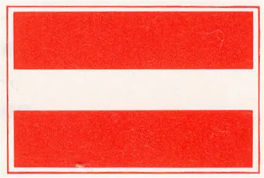 *) of | |
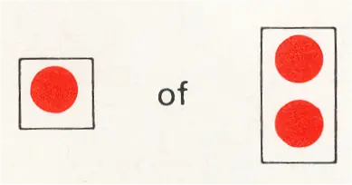 *) of | |||
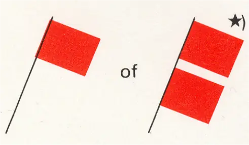 *) | |||
A.1. | a | Buiten gebruik gestelde gedeelten van de vaarweg; vaarverbod, niet geldend voor een klein schip zonder motor (artikel 6.22, lid 2) | 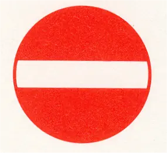 |
A.2 | Voorbijlopen verboden (artikel 6.11) | 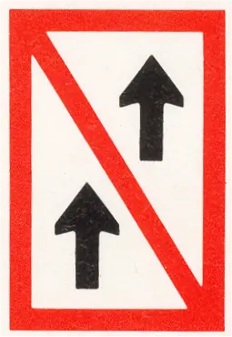 | |
A.3 | Voorbijlopen verboden voor samenstellen onderling Het verbod geldt niet, wanneer tenminste één van beide betrokken samenstellen een duwstel is waarvan de lengte en breedte niet meer bedragen dan 110 m respectievelijk 12 m (artikel 6.11) | 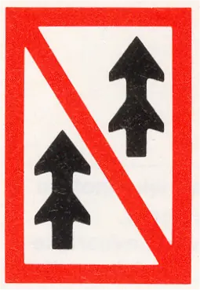 | |
A.4 | Ontmoeten en voorbijlopen verboden (artikelen 6.07, lid 1, en 6.11, onder c) | 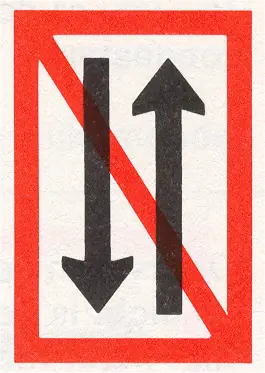 | |
A.4.1 | Ontmoeten en voorbijlopen van samenstellen onderling verboden. Dit verbod geldt niet wanneer tenminste één van beide betrokken samenstellen een duwstel is waarvan de lengte niet meer bedraagt dan 110 m en de breedte niet meer bedraagt dan 12 m (artikel 6.07, lid 1) | 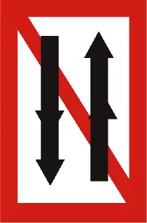 | |
A.5 | Verboden ligplaats te nemen (ankeren en meren) aan de zijde van de vaarweg waar het bord is geplaatst (artikel 7.02, lid 1 c) | 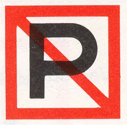 | |
A.5.1 | Verboden ligplaats te nemen (ankeren en meren) binnen de in meters aangegeven breedte te rekenen vanaf het bord (artikel 7.02, lid 1 k) | 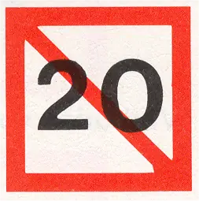 | |
A.6 | Verboden te ankeren en ankers, kabels en kettingen te laten slepen aan de zijde van de vaarweg waar het bord is geplaatst (artikelen 6.18, lid 5, 7.03, lid 1, onder b) | 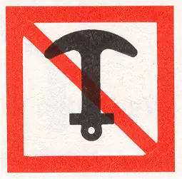 | |
A.7 | Verboden te meren aan de zijde van de vaarweg waar het bord is geplaatst (artikel 7.04, lid 1 b) | 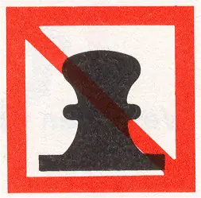 | |
A.8 | Verboden te keren (artikel 6.13, lid 6) | 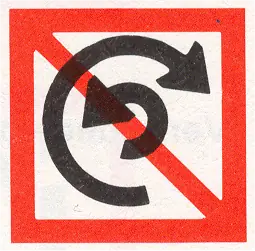 | |
A.9 | Verboden hinderlijke waterbeweging te veroorzaken (artikel 6.20, lid 1 e) | 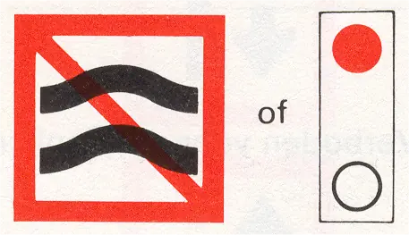 | |
A.10 | Verboden buiten de aangegeven begrenzing te varen (artikel 6.24, lid 2 a) | 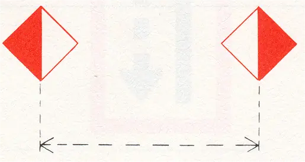 | |
A.11 | In-, uit- of doorvaren, wordt aanstonds toegestaan (artikelen 6.26, lid 4c, 6.28a, lid 1c) | 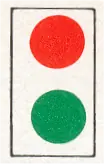 | |
A.11.1 | Doorvaren verboden, tenzij de doorvaartopening zo dicht is genaderd, dat stilhouden redelijkerwijs niet meer mogelijk is (artikel 6.26, lid 4f) groen flikkerlicht | 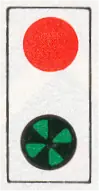 | |
A.12 | Verboden voor motorschepen | 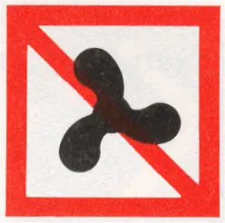 | |
A.13 | Verboden voor kleine schepen | 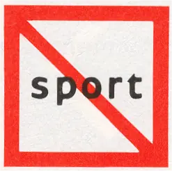 | |
A.14 | Verboden te waterskiën | 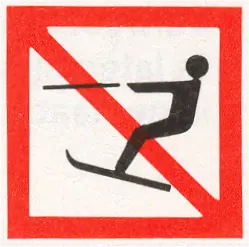 | |
A.15 | Verboden voor zeilschepen | 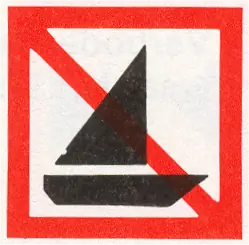 | |
A.16 | Verboden voor door spierkracht voortbewogen schepen | 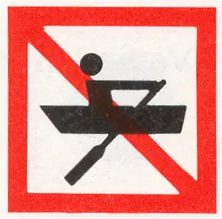 | |
A.17 | Verboden voor zeilplanken | 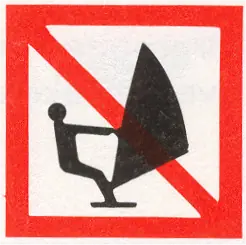 | |
A.18 | Einde van het vaarweggedeelte waar door snelle motorboten zonder beperking van de snelheid mag worden gevaren | 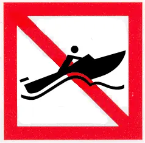 | |
A.19 | Verboden schepen te water te laten en uit het water te halen | 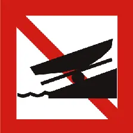 | |
A.20 | Verboden voor waterscooters | 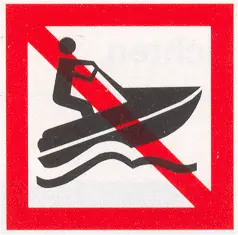 |
*) Het gebruik van twee boven elkaar geplaatste borden, lichten of vlaggen duidt een verbod van langere duur aan.